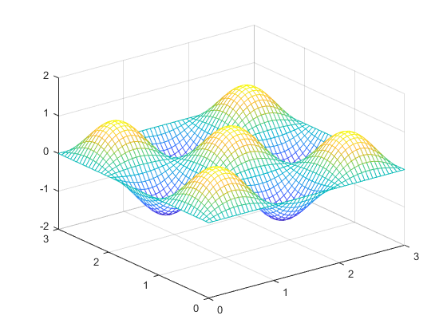

FiniteDifference2D.m
This is the simulation of a sin(x)sin(y) that is numerically solved with the Finite Difference Method in 2D. The wave will be modelled as a standing wave in space with the wave being fixed to 0 at all boundaries.
Contents
- Define Inputs
- Stability Checking
- Calculate and Plot Function
- Capture Frame for .GIF output
- Finite Difference Update Equation
- Force Function to be 0 at Boundaries
- Swap Function Arrays
- Central1DFiniteDiff(speedX, speedY, deltaT, deltaX, deltaY, funcAheadX, funcAheadY, func, funcBehindX, funcBehindY, funcBehindT)
- SineInput2D(Cycles, Xfinal, Xinitial, Yfinal, Yinitial, NumberOfPoints)
Define Inputs
close all; %Spatial Inputs initialX = 0; finalX = 3; initialY = 0; finalY = 3; Npoints = 50; %number of points between the initial and final X, Y Ncycles = 1.5; %number of full sine cycles %space vectors x = linspace(initialX,finalX,Npoints); y = linspace(initialY,finalY,Npoints); %set inputs for the time initialTime = 0; finalTime = 1; NtimePoints = 4; %Velocity is written to be the same for the X and Y direction but I wrote %this so I can easily start turning this into different X and Y speeds PropagationSpeed = 300; PropagationSpeedX = PropagationSpeed; PropagationSpeedY = PropagationSpeed; tDelta = (finalTime-initialTime)/NtimePoints; xDelta = (finalX-initialX)/Npoints; yDelta = (finalY-initialY)/Npoints; filename = 'output2D.gif'; FrameDelay = 0; %create arrays for functions to use at (t-1),t,(t+1) nextFunc = zeros(length(x), length(y)); pastFunc = zeros(length(x), length(y)); h = figure; %create the initial function of product of 2 sine waves and plot it func = SineInput2D(Ncycles, finalX, initialX, finalY, initialY, Npoints);
Stability Checking
This is meant to check the stability of the Finite Difference Function across every update in time. This is done by using the Courant-Friedrichs-Lewy (CFL) Condition. The function checks that the CFL number must be <= 1 or else the function is proven to be unstable. When the program finds out that the given values are unstable then the program will ask for a CFL constant and if a value is valid (i.e. <= 1) then the velocity of the function will be scaled to fit the given CFL from the user.CFL = (PropagationSpeed*tDelta)/xDelta;
if CFL > 1 %CFL is determined to be unstable, ask for a new CFL and scale the %speed of the function so the CFL can be the same as the given value as %long at the given CFL is less than 1 fprintf('Your inputs will create an unstable system. Speed will be automatically adjusted for stability\n\n'); prompt = 'Enter desired CFL: '; %NOTE THIS IS COMMENTED OUT SO THE PUBLISH CAN RUN %desiredCFL = input(prompt); %THIS IS A DUMMY VARIABLE FOR THE PUBLISH TO RUN desiredCFL = 0.75; if desiredCFL <= 1 PropagationSpeedX = (desiredCFL*xDelta)/tDelta; PropagationSpeedY = (desiredCFL*yDelta)/tDelta; else fprintf('Not a valid CFL. Exiting Program\n'); return end end
Your inputs will create an unstable system. Speed will be automatically adjusted for stability
Calculate and Plot Function
for t = 1:NtimePoints %ticks in time
mesh(x, y, func);
zlim([-2 2]); %amplitude of simulations is currently limited to 1
 Capture Frame for .GIF output
drawnow
% Capture the plot as an image
frame = getframe(h);
im = frame2im(frame);
[imind,cm] = rgb2ind(im,256);
% Write to the GIF File
if t == 1
imwrite(imind,cm,filename,'gif', 'Loopcount',inf);
else
imwrite(imind,cm,filename,'gif','WriteMode','append');
end
Error using getframe (line 52)
A valid figure or axes handle must be specified
Error in FiniteDifference2D (line 82)
frame = getframe(h);
Finite Difference Update Equation
for n = 2:(Npoints-1) %correspond to X for m = 2:(Npoints-1) %correspond to Y
if t == 1 nextFunc(n,m) = 0.5*Central2DFiniteDiff(PropagationSpeedX,... PropagationSpeedY, tDelta, xDelta, yDelta, func(n+1,m),... func(n,m+1), func(n,m), func(n-1,m), func(n,m-1), 0); else nextFunc(n,m) = Central2DFiniteDiff(PropagationSpeedX,... PropagationSpeedY, tDelta, xDelta, yDelta,... func(n+1,m), func(n,m+1), func(n,m), func(n-1,m),... func(n,m-1), pastFunc(n,m)); end
Force Function to be 0 at Boundaries
nextFunc(1,m) = 0;
nextFunc(end,m) = 0;
end nextFunc(n,1) = 0; nextFunc(n,end) = 0; end
Swap Function Arrays
Future Array (t+1) -> Present Array (t) Present Array (t) -> Past Array (t-1) then delay if needed
pastFunc = func; func = nextFunc; pause(FrameDelay);
end
Central1DFiniteDiff(speedX, speedY, deltaT, deltaX, deltaY, funcAheadX, funcAheadY, func, funcBehindX, funcBehindY, funcBehindT)
speedX - speed in X direction of the wave speedY - speed in Y direction of the wave deltaT - time between each time interval deltaX - distance between each point in X deltaY - distance between each point in Y funcAheadX - f(x+1, y, t) funcAheadY - f(x, y+1, t) func - f(x, y, t) funcBehindX - f(x-1, y, t) funcBehindY - f(x, y-1, t) funcBehindT - f(x, y, t-1)
This is the main update equation for the Finite Difference Equation for 2 dimensions. This is written to update each point independently so only points should be inputs and a single value will be the output.
function output4 = Central2DFiniteDiff(speedX, speedY, deltaT, deltaX, ... deltaY, funcAheadX, funcAheadY, func, funcBehindX, funcBehindY, funcBehindT) arguments speedX (1,:) {mustBeNumeric, mustBeFinite, mustBePositive} speedY (1,:) {mustBeNumeric, mustBeFinite, mustBePositive} deltaT (1,:) {mustBeNumeric, mustBeFinite} deltaX (1,:) {mustBeNumeric, mustBeFinite} deltaY (1,:) {mustBeNumeric, mustBeFinite} funcAheadX (:,:) {mustBeNumeric, mustBeFinite} funcAheadY (:,:) {mustBeNumeric, mustBeFinite} func (:,:) {mustBeNumeric, mustBeFinite} funcBehindX (:,:) {mustBeNumeric, mustBeFinite} funcBehindY (:,:) {mustBeNumeric, mustBeFinite} funcBehindT (:,:) {mustBeNumeric, mustBeFinite} end output4 = (((speedX^2)*(deltaT^2))/(deltaX^2))*(funcAheadX ... - 2*func + funcBehindX) + (((speedY^2)*(deltaT^2))/(deltaY^2))*(funcAheadY ... - 2*func + funcBehindY) + 2*func - funcBehindT; end
SineInput2D(Cycles, Xfinal, Xinitial, Yfinal, Yinitial, NumberOfPoints)
Cycles - total amount of sine cycles between the boundaries given Xfinal - value of the last X point Xinitial - value of the first X point Yfinal - value of the last Y point Yinitial - value of the first Y point NumberOfPoints - the total number of points for both X and Y directions
Creates an initial state of the function for the update equation of the Finite Difference Method to work with. This input will be N by N matrix the size (N = NumberOfPoints). The function will take the form of sin(x)sin(y) shifted and scaled so the input has the given amount of cycles in both the X and Y direction.
function output3 = SineInput2D(Cycles, Xfinal, Xinitial, Yfinal, Yinitial, NumberOfPoints) arguments Cycles (1,:) {mustBeNumeric, mustBeFinite, mustBePositive} Xfinal (1,:) {mustBeNumeric, mustBeFinite} Xinitial (1,:) {mustBeNumeric, mustBeFinite} Yfinal (1,:) {mustBeNumeric, mustBeFinite} Yinitial (1,:) {mustBeNumeric, mustBeFinite} NumberOfPoints (1,:) {mustBeNumeric, mustBeFinite, mustBeNonzero} end x = linspace(Xinitial,Xfinal,NumberOfPoints); y = linspace(Yinitial,Yfinal,NumberOfPoints); output3 = sin(((Cycles*2*pi)/Xfinal)*(x-Xinitial)).*sin(((Cycles*2*pi)/Yfinal)*(y'-Yinitial)); end